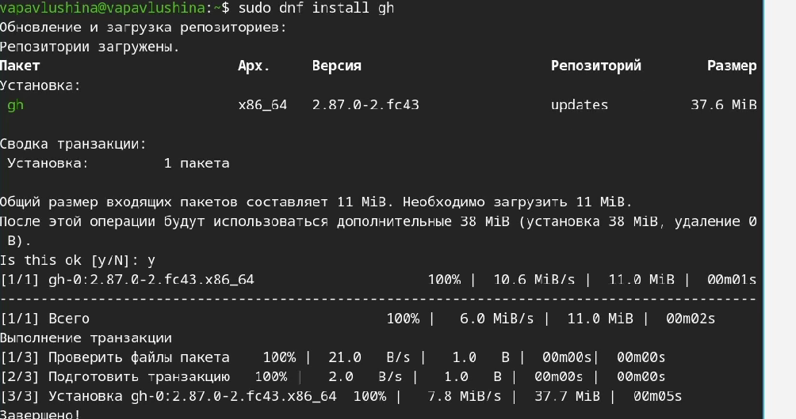
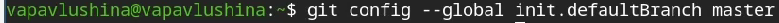
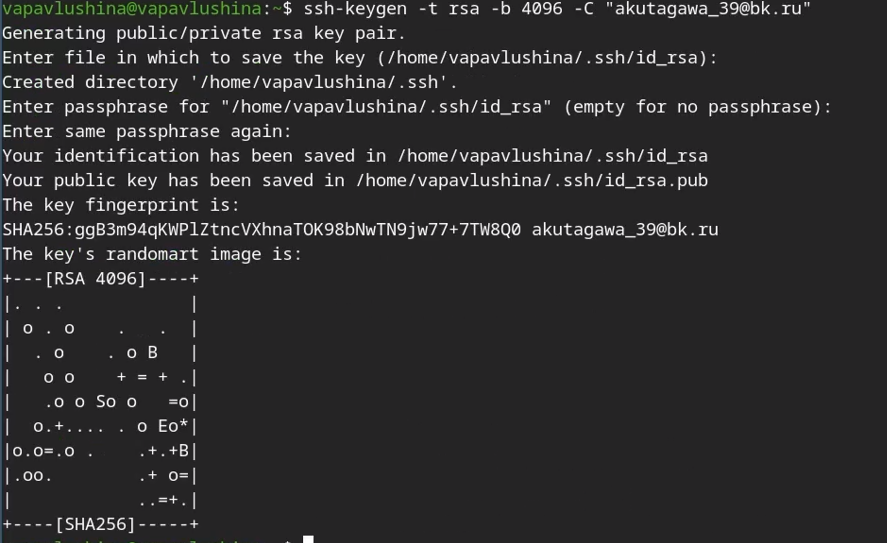
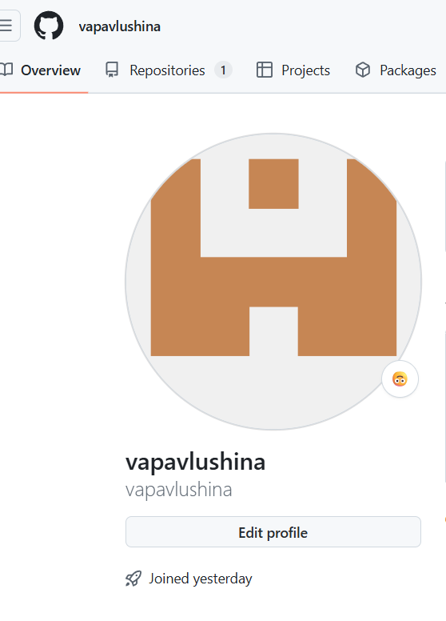
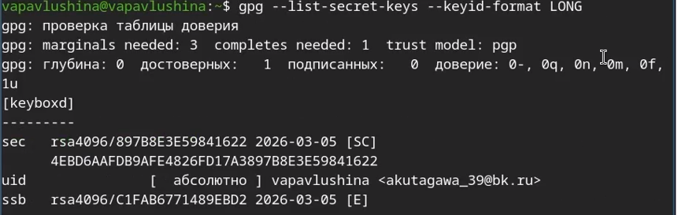
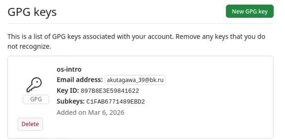
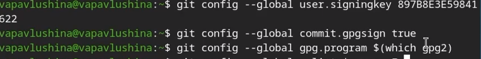
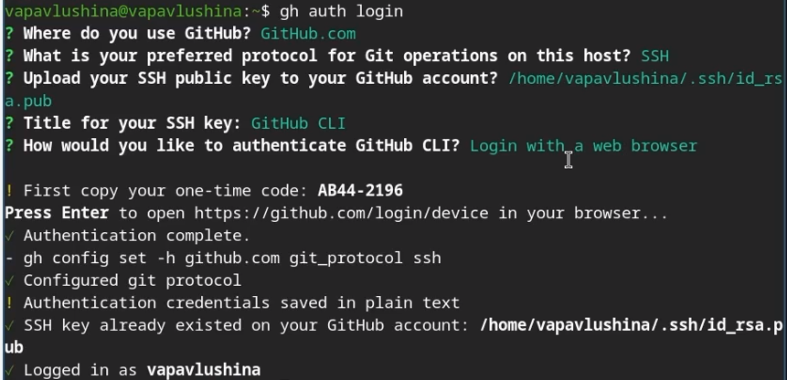
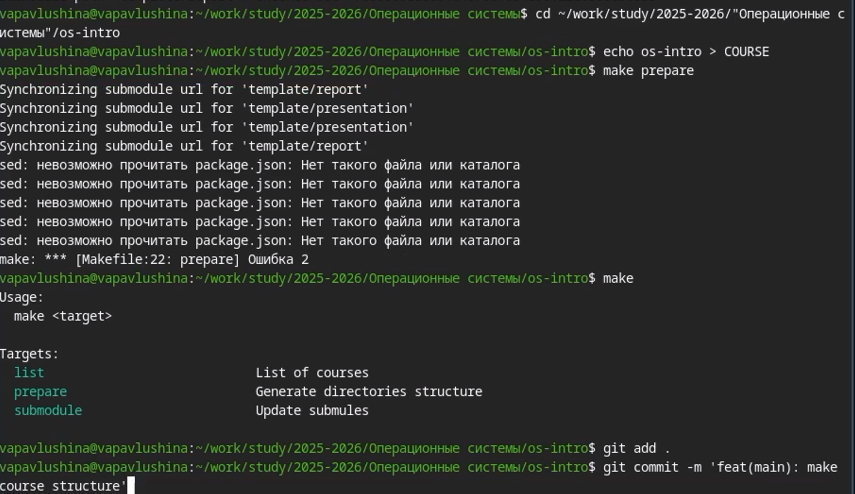

Цель работы
Изучить идеологию и применение средств контроля версий и освоить
умения по работе с git.
Задания
-Создать базовую конфигурацию для работы с git. -Создать ключ SSH.
-Создать ключ PGP. -Настроить подписи git. -Зарегистрироваться на
Github. -Создать локальный каталог для выполнения заданий по
предмету.
Теоретическое введение
Системы контроля версий нужны для работы нескольких человек над одним
проектом. Обычно основное дерево проекта хранится в локальном или
удалённом репозитории, к которому настроен доступ для участников
проекта. При внесении изменений в содержание проекта система контроля
версий позволяет их фиксировать, совмещать изменения, произведённые
разными участниками проекта, производить откат к любой более ранней
версии проекта, если это требуется.
Выполнение лабораторной
работы
Установка программного
обеспечения
Устанавливаем git ([рис. @fig:lab02-1]).  {#fig: lab02-1}
{#fig: lab02-1}
Устанавливаем gh ([рис. @fig:lab02-2]).

{#fig: lab02-2}
Базовая настройка git
Задаём имя пользователя и email ([рис. @fig:lab02-3]).  {#fig: lab02-3}
{#fig: lab02-3}
Настраиваем utf-8 в выводе сообщений git ([рис. @fig:lab02-4]). {#fig: lab02-4}
Настроим верификацию и подписание коммитов git. Для этого зададим имя
начальной ветки ([рис.
@fig:lab02-5]) и настроим параметры autocrlf, safecrlf ([рис. @fig:lab02-6]).

{#fig:
lab02-5}  {#fig: lab02-6}
{#fig: lab02-6}
Создание ключа ssh
Создадим по алгоритму rsa с ключом размером 4096 бит ([рис. @fig:lab02-7]).

{#fig:
lab02-7}
Создание ключа pgp
Генерируем ключ ([рис. @fig:lab02-8]).  {#fig: lab02-8}
{#fig: lab02-8}
Настройка github
Создали учётную запись на github ([рис. @fig:lab02-9]).

{#fig: lab02-9}
Добавление PGP ключа в
GitHub
Выводим список ключей и копируем отпечаток приватного ключа ([рис. @fig:lab02-10],
([рис. @fig:lab02-11)).

{#fig: lab02-10}  {#fig: lab02-11}
{#fig: lab02-11}
Перейдём в настройки GitHub, нажмём на кнопку New GPG key и вставим
полученный ключ в поле для ввода ([рис. @fig:lab02-12]).

{#fig: lab02-12}
Добавление SSH ключа в
GitHub
Для этого с помощью cat выедем отпечаток ключа SSH и скопируем его в
буфер обмена ([рис.
@fig:lab02-13]).  {#fig: lab02-13}
{#fig: lab02-13}
И вставим его в GitHub ([рис. @fig:lab02-14]).  {#fig:
lab02-14}
{#fig:
lab02-14}
Настройка
автоматических подписей коммитов git
Используя введённый email, укажем Git применять его при подписи
коммитов ([рис.
@fig:lab02-15]).

{#fig:
lab02-15}
Настройка gh
Авторизуемся ([рис.
@fig:lab02-16]).

{#fig: lab02-16}
Шаблон для рабочего
пространства
Создадим репозиторий курса на основе шаблона ([рис. @fig:lab02-17]).  {#fig:
lab02-17}
{#fig:
lab02-17}
Настраиваем каталог курса. Перейдём в каталог курса, удалим лишние
файлы и создадим необходимые каталоги ([рис. @fig:lab02-18]).

{#fig:
lab02-18}
И теперь отправляем файлы на сервер ([рис. @fig:lab02-19]).  {#fig: lab02-19}
{#fig: lab02-19}
Выводы
Изучила идеологию и применение средств контроля версий и освоила
умения по работе с git.
Контрольные вопросы
- Что такое системы контроля версий (VCS) и для решения каких задач
они предназначаются? - VCS - это программные инструменты, которые
отслеживают изменения в файлах и позволяют управлять историей этих
изменений. Предназначены для хранения истории проекта, отката к старым
версиям, совместной работы над одним проектом.
- Объясните следующие понятия VCS и их отношения: хранилище, commit,
история, рабочая копия. - Хранилищем является репозиторий, он хранит в
себе все файлы проекта и историю их изменений. Commit - это фиксация
измений файлов в проекте. История - это журнал всех когда-либо сделанны
коммитов, по которому можно перемещаться. Рабочая копия - это локальная
версия файлов проекта, с которой пользователь работает в данный
момент.
- Что представляют собой и чем отличаются централизованные и
децентрализованные VCS? Приведите примеры VCS каждого вида. -
Централизованные VCS: есть одно главное хранилище на сервере. Работать
без сети нельзя. Примеры: CVS. Десцентрализованные: у каждого
разработчика на компьютере есть полная копия всего хранилища. Работать
можно без интернета. Примеры: Git.
- Опишите действия с VCS при единоличной работе с хранилищем. -
Создать локальное хранилище(git init), создавать/редактировать файлы в
рабочей папке, добавлять файлы в область подготовленных (git add),
фиксировать изменения с комментарием(git commit), при необходимости
можно просматривать историю (git log).
- Опишите порядок работы с общим хранилищем VCS. - Получить актуальную
версию из общего репозитория(git pull), внести свои изменения, отправить
свои изменения в общее хранилище(git push), при необходимости можно
будет сделать слияние изменений и после снова их отправить.
- Каковы основные задачи, решаемые инструментальным средством git? -
Отслеживание истории изменений, обеспечение одновременной работы
нескольких разработчиков, управление ветками, синхронизация изменений
между локальным и удалёнными репозиториями.
- Назовите и дайте краткую характеристику командам git.
- git init (создать новый репозиторий)
- git clone (скопировать существующий репозиторий к себе)
- git add (добавить файлы в индекс)
- git commit (зафиксировать изменения)
- git status (посмотреть состояние файлов)
- git log (посмотреть историю коммитов)
- git push (отправить коммиты в удалённый репозиторий)
- git pull (скачать изменения из удалённого репозитория)
- git branch (работа с ветками)
- Приведите примеры использования при работе с локальным и удалённым
репозиториями. - Локальный репозиторий: git init -> git add . ->
git commit -m “comment” -> git log. Удалённый репозиторий: git clone
-> git add . -> git commit -m “comment” -> git pull ->
git push.
- Что такое и зачем могут быть нужны ветви (branches). Ветви - это
указатели на определённые коммиты, позволяющие вести параллельную
разработку. Нужны, чтобы разрабатывать новые функции или исправлять
ошибки изолированно.
- Как и зачем можно игнорировать некоторые файлы при commit? - Нужно,
чтобы случайно не закоммитить служебные или временные файлы ( с
паролями, кэш итд). Для этого создаётся файл .gitignore, в котором
прописываются шаблоны имен файлов/каталогов, которые Git должен
игнорировать.